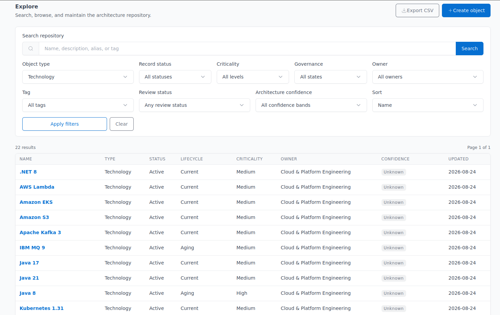
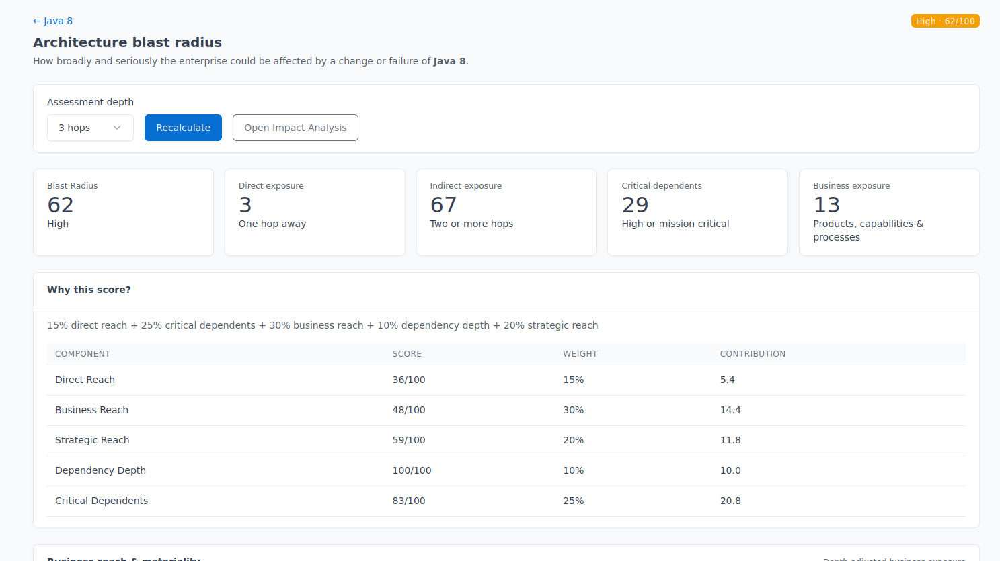
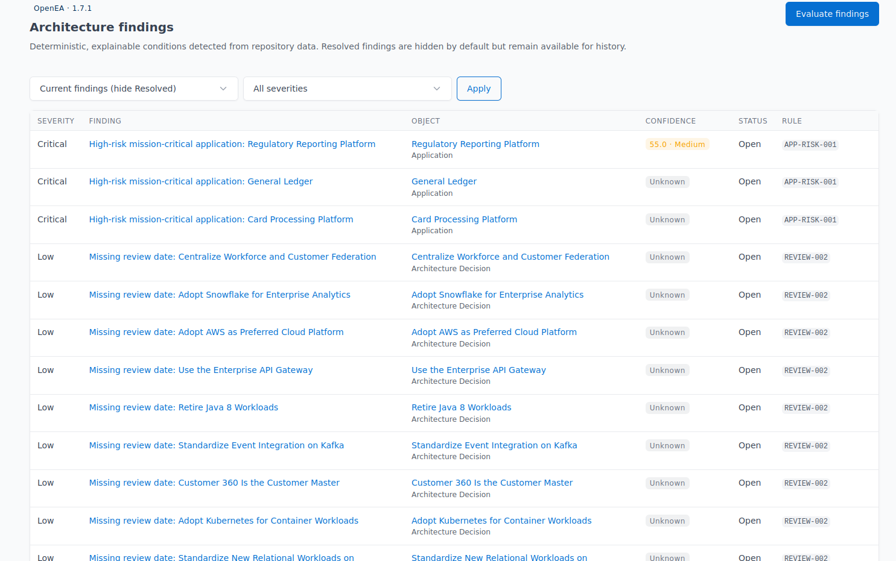

Repository first
Architecture objects and relationships form the authoritative model. Views, diagrams, dashboards, findings, and analytics are derived from it.
OpenEA turns enterprise architecture data into decision support. Connect business capabilities, applications, technology, data, initiatives, and decisions—then see what matters when architecture changes.
OpenEA is built around the architecture repository—not around slides, isolated diagrams, or disconnected inventories. The model becomes the foundation for analysis, governance, and change.
Architecture objects and relationships form the authoritative model. Views, diagrams, dashboards, findings, and analytics are derived from it.
Connect technology to applications, capabilities, processes, products, data, ownership, initiatives, and decisions so technical change has business meaning.
Risk, confidence, findings, and impact should be deterministic. OpenEA is designed to show why an analytical result exists—not just display a score.
A repository is useful when it helps architects and technology leaders understand consequences, dependencies, and priorities.
Explore OpenEA capabilitiesWhat business capabilities does this application support?
What happens if this application or technology is retired?
Which applications depend on technology approaching end of support?
Where is architecture risk concentrated across the enterprise?
Which initiatives are changing the same architecture at the same time?
Model applications, technologies, capabilities, processes, products, data, organizations, initiatives, and other architecture objects in a governed repository.
Connect the architecture and traverse dependencies rather than treating objects as isolated inventory records.
Surface deterministic architecture findings using governed, declarative rules that can be reviewed and explained.
Track the evidence behind architecture assertions and assess confidence rather than treating every repository value as equally trustworthy.
Analyze downstream architectural and business exposure with materiality, path depth, criticality, and strategic importance reflected in the result.
Support architecture review, accountability, auditability, and history so decisions and changes retain their context over time.
Navigate architecture objects, their relationships, lifecycle, findings, Blast Radius, governance context and more from OpenEA.



OpenEA is being built as a practical, self-hosted, open-source alternative to platforms such as SAP LeanIX, Software AG Alfabet, Ardoq, and Essential.
Run OpenEA on infrastructure you control.
No external SaaS service is required for the core platform.
Analytical results are designed to be deterministic and inspectable.
Strong defaults provide structure while the platform evolves toward governed extensibility.
Product and company names are trademarks of their respective owners. OpenEA is not affiliated with or endorsed by those vendors.
Operational configuration inventory is not the primary model.
Diagrams should be views of architecture, not the authoritative architecture.
Initiatives provide architecture context; they do not replace delivery tooling.
The core product is designed for straightforward self-hosting.
$ git clone https://github.com/openeadev/openea-community.git
$ cd openea-community
$ docker compose up -d
# OpenEA
# PostgreSQL
# self-hosted architecture managementOpenEA uses a conventional Python and PostgreSQL stack with Docker Compose as the official deployment path. The architecture intentionally avoids requiring a JavaScript SPA, graph database, search cluster, message broker, or external SaaS service for the core experience.
OpenEA is licensed under the GNU Affero General Public License v3.0 (AGPLv3). The project is intended to make serious enterprise architecture management accessible without requiring a proprietary EA platform.
Explore the project on GitHubTry OpenEA, inspect the source, and follow the project as the platform continues to evolve.